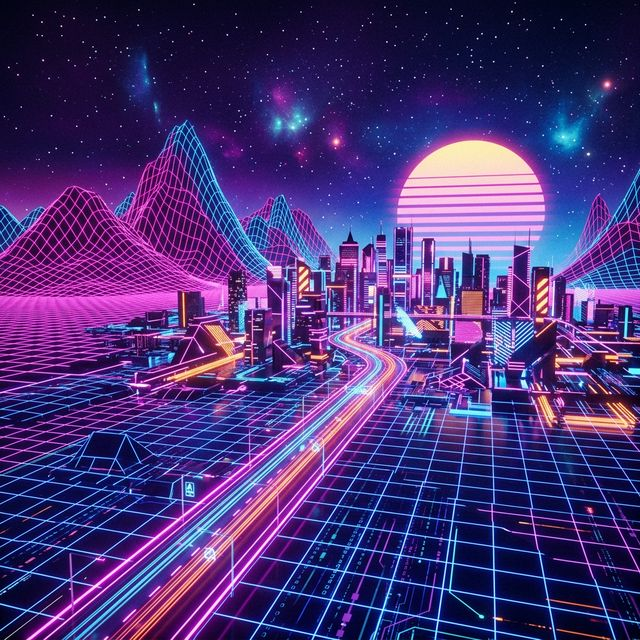

03 — Generación visual
Imágenes con IA
Cada imagen fue generada a partir de un prompt escrito, explorando distintas herramientas y estilos visuales dentro de la temática tecnología y futuro.




Un recorrido por las herramientas de Inteligencia Artificial generativa exploradas durante el curso — prompts, imágenes, audios y diseño unidos por una misma visión: el futuro se construye hoy█
▶ Ver portfolioTodo el portfolio orbita alrededor de una idea central: la IA no reemplaza la creatividad humana, la amplifica. Cada pieza explora cómo los modelos de lenguaje e imagen transforman nuestra relación con la tecnología y el porvenir.
Los modelos de IA son entrenados con enormes cantidades de datos para aprender patrones del lenguaje y la imagen. A partir de ese conocimiento general, pueden adaptarse a tareas específicas mediante prompts o fine-tuning.
La instrucción que le damos al modelo define la calidad del resultado. Un buen prompt incluye contexto, tono, formato esperado y restricciones claras: es el lenguaje con el que le hablamos al futuro.
La IA ya no solo escribe: genera imágenes fotorrealistas, sintetiza voces, compone música y edita video. Este portfolio reúne esas capacidades bajo un mismo lenguaje visual.
Con cada herramienta que usamos elegimos qué futuro construir. Reflexionar sobre sesgos, autoría y transparencia es parte esencial del trabajo con inteligencia artificial.
Colección de instrucciones diseñadas para obtener resultados creativos y precisos. Cada prompt incluye herramienta utilizada y fragmento de respuesta obtenida.
"Actuá como un escritor de ciencia ficción. Describí en 3 párrafos cómo sería la vida cotidiana en una ciudad inteligente del año 2075, enfocándote en la relación entre humanos e inteligencia artificial. Usá un tono poético pero accesible."
En la ciudad de 2075, el amanecer no llega con un reloj, sino con una conversación. Las persianas se abren suavemente cuando la inteligencia que habita en cada hogar percibe el ritmo del sueño y el estado de ánimo de sus habitantes. No hay alarmas estridentes, sino luces que imitan el alba y voces cálidas que sugieren, más que ordenan, el comienzo del día. La inteligencia artificial no es una herramienta visible, sino una presencia discreta que acompaña: recomienda, recuerda, anticipa. En lugar de pantallas que exigen atención, hay entornos que responden al susurro, al gesto mínimo, como si la ciudad misma respirara al compás de quienes la habitan.
En las calles, los vehículos no circulan: fluyen. Se deslizan en silencio, coordinados por sistemas que comprenden no solo el tránsito, sino también las historias que se cruzan en él. Una persona que camina apurada hacia una entrevista recibe, sin pedirlo, rutas despejadas y semáforos cómplices; otra que pasea sin rumbo es guiada por rincones donde la luz y la música parecen haber sido pensadas para ella. Las inteligencias artificiales aprenden de cada interacción, pero lo hacen con una delicadeza casi humana, respetando los límites invisibles del deseo y la privacidad. No invaden: sugieren, como un amigo que conoce bien cuándo hablar y cuándo guardar silencio.
Y sin embargo, en medio de tanta armonía calculada, lo más valioso sigue siendo lo impredecible. Las personas aún se encuentran por azar, se enamoran sin algoritmo, se equivocan sin corrección automática. Las inteligencias, lejos de reemplazar esos momentos, los resguardan como tesoros frágiles. Se han vuelto guardianas de lo humano, no sus sustitutas: cuidan el tiempo, reducen el ruido, pero dejan espacio para el error, para la duda, para la poesía. En 2075, la ciudad inteligente no es la que lo controla todo, sino la que entiende que hay cosas —las más importantes— que deben permanecer indomables.
"Dame 10 nombres creativos para una startup de IA que se enfoque en sostenibilidad ambiental. Los nombres deben ser cortos (máx. 2 palabras), sonar tecnológicos y evocar naturaleza."
"Explicá, de forma clara y sin tecnicismos, qué es un modelo de lenguaje grande (LLM) y cómo funciona el proceso de entrenamiento. Incluí una analogía con algo cotidiano."
Un modelo de lenguaje grande (LLM) es un tipo de inteligencia artificial que aprende a trabajar con el lenguaje humano. En lugar de memorizar frases, lo que hace es detectar patrones: cómo se combinan las palabras, qué suele venir después de qué, y cómo se construyen ideas completas.
Cómo se entrena:
El proceso de entrenamiento se parece mucho a enseñar a alguien a escribir mejor leyendo mucho. Se le da al modelo una enorme cantidad de textos. Va analizando palabra por palabra y aprendiendo las relaciones entre ellas. Con el tiempo, se vuelve capaz de predecir qué palabra o frase tiene más sentido en un contexto dado. No entiende como una persona, pero sí reconoce patrones con una precisión impresionante.
Analogía cotidiana:
Imaginá que querés aprender a cocinar sin recetas escritas. Lo que hacés es mirar a miles de personas cocinar, observar qué ingredientes usan juntos y cómo los combinan. Después de ver tantas veces, aunque nunca hayas leído una receta, podés improvisar un plato que “suene” correcto porque tu cabeza captó los patrones. Un LLM funciona igual: no memoriza cada texto, sino que aprende las combinaciones y estructuras para poder “improvisar” respuestas coherentes.
Cada imagen fue generada a partir de un prompt escrito, explorando distintas herramientas y estilos visuales dentro de la temática tecnología y futuro.

Textos convertidos a voz mediante herramientas de síntesis. Exploramos tonos, emociones y narrativas dentro de la temática futurista.
Narración del texto generado con ChatGPT sobre la ciudad inteligente del 2075. Voz seleccionada: masculina, tono reflexivo.
Texto de introducción del portfolio narrado en voz femenina con tono tecnológico y cercano.
Todas las herramientas de IA exploradas durante el curso y empleadas para construir este portfolio.